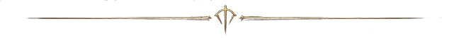

Zmiany w wersji 2.2.0

Wersja 2.2.0 z 18.11.2026. Numery poziomów w drzewkach umiejętności, nowy układ części umiejętności Czarodziejki i Czarnoksiężnika, ogłuszenie w Ataku z Wyskoku oraz Super i Uber Heroldowie. Zapisy postaci i talizmany w sakiewce zostają. Aktualizacja z 2.1.0: rozpakuj archiwum do folderu gry i zastąp pliki. Zmiany z poprzedniej wersji: 2.1.0.
Drzewka umiejętności
- Przy każdym rzędzie stoi kafelek z wymaganym poziomem postaci: 1, 6, 12, 18, 24 i 30.
- Kafelki poziomów, których postać jeszcze nie osiągnęła, są przygaszone tak jak niedostępne umiejętności.
- Kolumny umiejętności i kafelki są równo wyśrodkowane w panelu.
Czarodziejka – drzewko błyskawic
| Umiejętność | Nowe miejsce | Wymagany poziom |
|---|---|---|
| Burza z Piorunami (Thunder Storm) | 3. rząd, lewa kolumna | 12 (było 24) |
| Nova | 4. rząd, lewa kolumna | 18 (było 12) |
| Teleport | 3. rząd, prawa kolumna | 12 (było 18) |
Czarnoksiężnik – drzewko Eldritch
| Umiejętność | Nowe miejsce | Wymagany poziom |
|---|---|---|
| Mistrzostwo Lewitacji (Levitation Mastery) | 1. rząd, lewa kolumna | 1 (było 6) |
| Rozpłatanie (Cleave) | 1. rząd, środkowa kolumna | 1 (było 6) |
| Ostrze Spaczenia (Blade Warp) | 2. rząd, lewa kolumna | 6 (było 1) |
| Mentalna Ochrona (Psychic Ward) | 3. rząd, środkowa kolumna | 12 (było 18) |
Barbarzyńca
- Atak z Wyskoku (Leap Attack) ogłusza trafionego wroga na 0,6 sekundy.
Strefy Grozy
- Heroldowie w strefach po Super Odłamku nazywają się Super Heroldami, a po Uber Odłamku – Uber Heroldami. Opisy odłamków mówią o nich tak samo.
Menu i okna
- Nowo utworzona postać wchodzi od razu do gry, bez okna wyboru trudności. Przy istniejących postaciach okno działa jak dotąd.
- Na ekranie startowym nad nazwą moda jest nazwa gry.